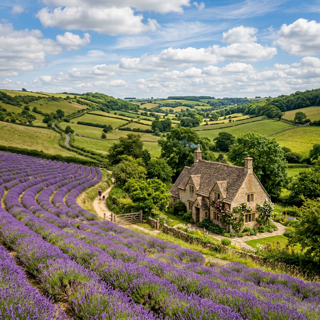
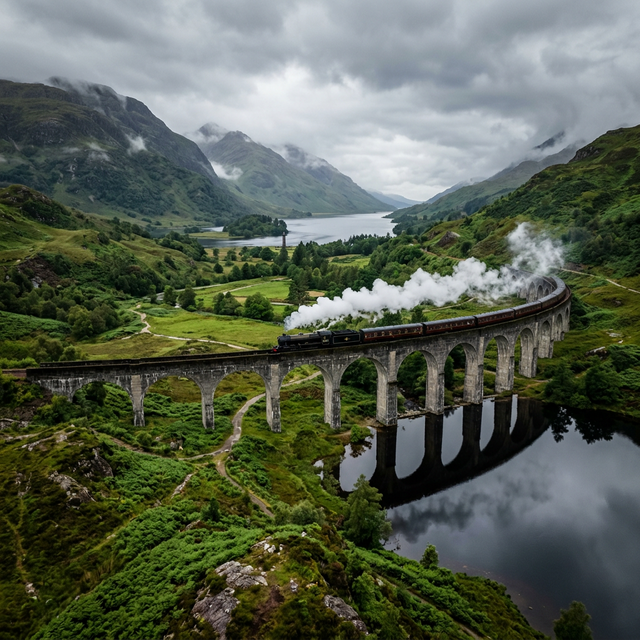
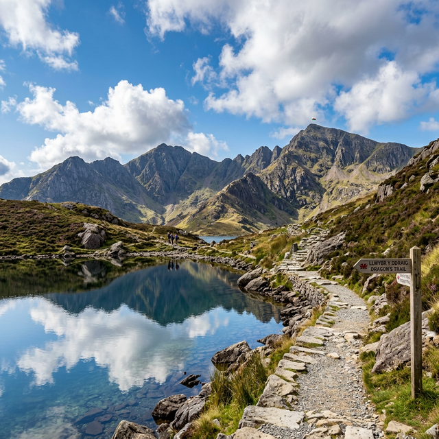
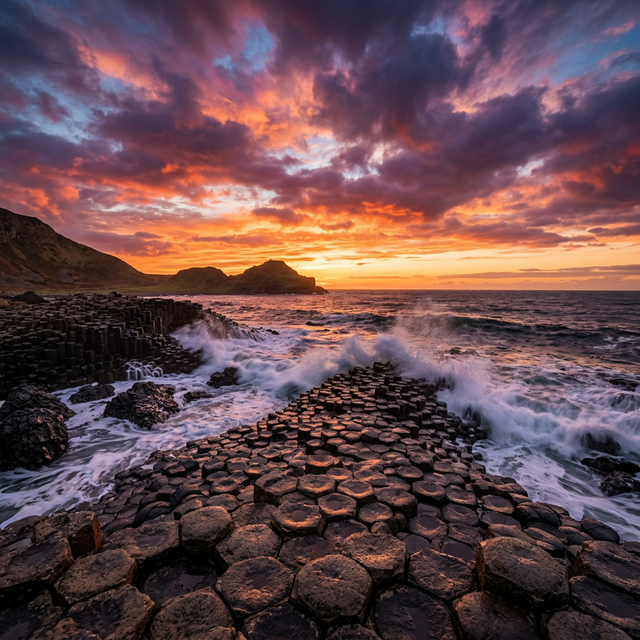

Experience the soul of the British Isles. From the rugged Highlands to the rolling valleys of Wales, BritishWings connects you to the heritage, mystery, and vibrant culture of our four distinct nations.
Welcome to our comprehensive guide. Whether you are a history buff, an adrenaline seeker, or a culinary enthusiast, the four nations of BritishWings offer a lifetime of discovery.

England is the largest and most populous nation in the UK. It is a land defined by its mix of deep-rooted history—stretching from the Neolithic era to the Industrial Revolution—and its role as a global cultural powerhouse.
From London’s global hub to the surfing beaches of Cornwall and the natural beauty of the Lake District.
Indulge in a traditional Sunday Roast with Yorkshire pudding or iconic Fish & Chips by the pier.
Sophisticated, diverse, and iconic.
Represented by the historic Big Ben and the Tudor Rose.

Occupying the northern third of Great Britain, Scotland is a nation of intense national pride, dramatic landscapes, and a history of fierce independence and enlightenment.
Home to the scenic Highlands, Ben Nevis, and deep glacial lakes known as Lochs, alongside historic Edinburgh.
The home of Whisky; visit iconic distilleries or sample authentic Haggis and fresh Atlantic Salmon.
Majestic, ancient, and spirited.
Represented by the resilient Thistle and the Highlands peaks.

Wales is a maritime nation where the ancient Welsh language is still spoken daily. Known for its mountainous terrain and massive medieval fortifications.
Dominated by Snowdonia (Eryri) mountain range—featuring the world's fastest zip line and Snowdon peak.
Taste Cawl (lamb stew) or Welsh Rarebit (gourmet melted cheese on toast) in the castle capital of the world.
Authentic, adventurous, and lyrical.
Represented by the Red Dragon and the vibrant Daffodil.

Located across the Irish Sea, Northern Ireland is known for its staggering geological formations, complex history, and major filming locations for global cinema.
The Causeway Coast is home to Giant’s Causeway, 40,000 interlocking basalt columns, and the Fermanagh Lakelands.
Enjoy an Ulster Fry featuring soda bread and potato farls, or visit Game of Thrones filming locations.
Legendary, welcoming, and scenic.
Represented by the Shamrock and the geometric wonder of the Causeway.
Hand-picked experiences designed to take you deeper into the heart of the kingdom.
England: 5-day luxury stay in London & Windsor. Includes 5-star hotel and a VIP Palace Tour.
Scotland: 7-day adventure across Edinburgh & Inverness. Includes 4x4 Highland Safari and Whisky Tasting.
Wales: 4-day history and peaks tour in Snowdonia & Cardiff. Includes Mountain Railway Pass.
N. Ireland: 4-day journey in Belfast & the Causeway. Includes coastal drive and Titanic Experience.
Real stories from our global travelers.
The Royal Circuit was seamless. The high tea on board actually felt like a premium lounge experience in the sky!
The 4x4 safari through the Cairngorms was breathtaking. Truly personal service from the BritishWings staff.
The staff were so friendly, they even taught me how to say 'Diolch' during the flight. Wales surprised me!
Enjoy premium teas and fresh scones on every flight over 45 minutes.
Investing in carbon-offsetting projects across the UK’s national parks.
Our crew members are locals, ready to provide the best "insider" tips the moment you board.